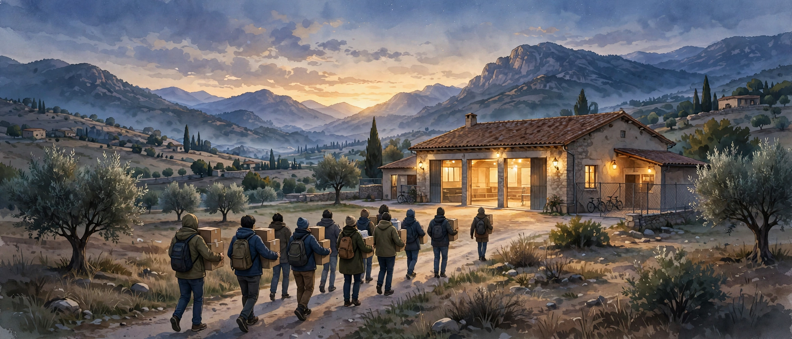

Church & WorldIglesia y Mundo
After Spain's Deadly Train Crash, Evangelical Churches Rush to Comfort the GrievingTras el mortal choque de trenes en España, las iglesias evangélicas corren a consolar a los afligidos
At least 68 people died when two high-speed trains collided near Toledo, and Spain's evangelical federation called on churches across three regions to stand beside the families and survivors.Al menos 68 personas murieron al chocar dos trenes de alta velocidad cerca de Toledo, y la federación evangélica de España llamó a las iglesias de tres regiones a acompañar a las familias y a los sobrevivientes.